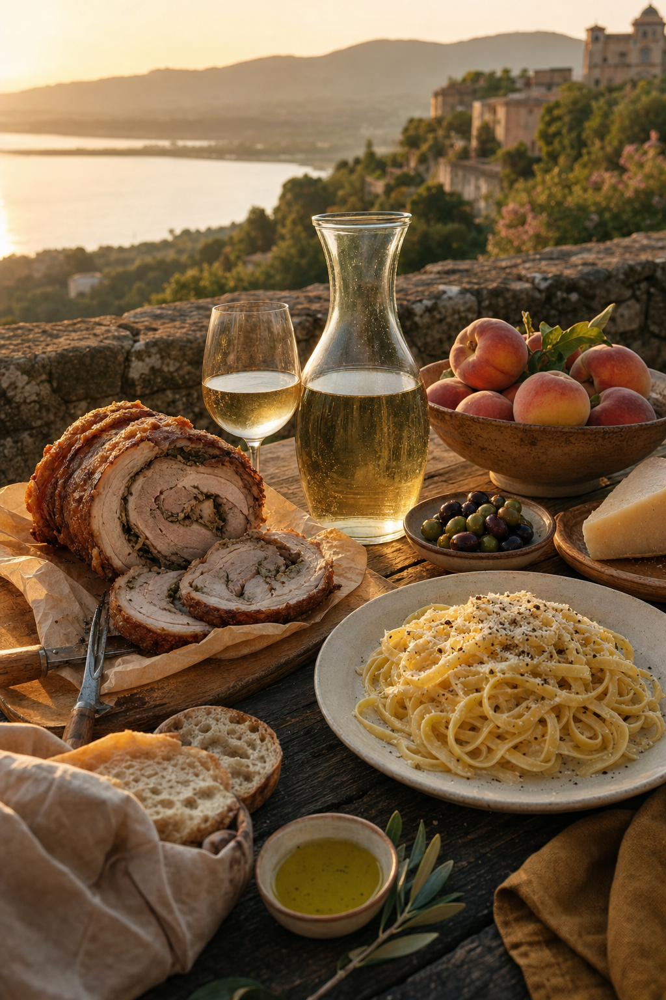

Il borgo dei Papi affacciato sul cratere.
Quattro secoli di villeggiatura pontificia, un lago vulcanico profondo 168 metri e i sapori dei Colli Albani a soli 25 km da Roma. Una guida completa, verificata riga per riga.
Un balcone barocco sul lago vulcanico.
Castel Gandolfo è un comune di 8.558 abitanti arroccato sul bordo occidentale della caldera dei Colli Albani. Dal 1626 residenza estiva dei Pontefici, dal 2016 aperto al pubblico come museo, dal luglio 2026 di nuovo abitato da Papa Leone XIV. Il borgo, membro de I Borghi più belli d'Italia, vive una nuova stagione che unisce arte, natura e spiritualità.

Palazzo Apostolico & Ville Pontificie
La residenza estiva dei Papi, aperta come museo con appartamenti pontifici, giardini di Villa Barberini e Antiquarium archeologico.

Borgo Laudato Si'
55 ettari extraterritoriali di ecologia integrale, aperti al pubblico con visite guidate stagionali.

Lago Albano
Il lago vulcanico più profondo del Lazio: balneazione, kayak, SUP, periplo di 10 km.

2026 · Il ritorno del Papa al lago.
Il 10 maggio 1626 papa Urbano VIII inaugurò la villeggiatura pontificia nel Palazzo di Castel Gandolfo. Esattamente quattrocento anni dopo, il 5 luglio 2026, papa Leone XIV ha varcato di nuovo la soglia del Palazzo Apostolico, riportando la tradizione della residenza estiva dopo la pausa voluta da Francesco.
Il 12, 19 e 26 luglio 2026 il Pontefice ha recitato l'Angelus da piazza della Libertà, e nello stesso mese il borgo ha celebrato la 90ª edizione della Sagra delle Pesche. Un anno che unisce spiritualità, gastronomia e memoria collettiva.
Leggi il reportage“A Castel Gandolfo si respira l'aria dei Papi e il silenzio del lago, a un'ora di macchina da San Pietro.”National Geographic Traveler

Sei chilometri quadrati di acqua vulcanica.
Il Lago Albano si estende su circa 6 km² con una profondità massima di 168 metri: è il più profondo del Lazio, nato dall'unione di due crateri. I motori sono vietati — solo pedalò, kayak, canoa, SUP e vela.
La stagione balneare 2026 è aperta dall'1 maggio al 30 settembre. Il periplo del lago è un anello CAI di circa 10 km, percorribile a piedi o in bicicletta, con vista costante sul borgo e sui giardini pontifici.
Attività & balneazioneDa vivere questa stagione.
Un'estate che unisce tradizioni secolari, spiritualità e nuovi appuntamenti culturali. Segnati sul calendario le date da non perdere.

Il gusto dei Castelli Romani.
Porchetta di Ariccia IGP, fettuccine e saltimbocca, formaggi di pecora, olio dei Colli Albani. E sopra tutto, i vini DOC: Frascati DOCG, Castelli Romani DOC, Marino DOC e i bianchi minerali dei crateri.
Le pesche di Castel Gandolfo, dolcissime, sono protagoniste della sagra secolare di luglio. Le fraschette tradizionali attorno al lago servono cucina povera romana in bicchieri di vino sfuso.
Ristoranti selezionatiSelezionati per te.
Dagli hotel storici con vista sul lago alle dimore rurali sulle colline: una selezione ristretta di strutture verificate, con dati anagrafici, distanze e caratteristiche.
Hotel Castel Vecchio
Storico hotel affacciato sul lago, tra i più iconici del borgo. 24 km da Roma centro.
Villa degli Angeli
Country house tra le colline, cucina tradizionale e spa con vista sui vigneti dei Castelli.
Palazzo Pontificio Suites
Appartamenti eleganti nel cuore del borgo, a due passi da piazza della Libertà.
Casale sul Cratere
Dimora rurale con vigneto e uliveto, cucina a km zero e degustazioni di Frascati DOCG.
Storie dal borgo e dal lago.
Approfondimenti, curiosità e reportage editoriali. Dalla storia papale ai segreti geologici del cratere, fino ai personaggi che hanno abitato queste colline.
Il ritorno di Papa Leone XIV a Castel Gandolfo
Dopo dieci anni, il Palazzo Apostolico torna a essere residenza estiva. Cronaca del 5 luglio 2026.
Il cratere che si è riempito d'acqua
Perché il Lago Albano è così profondo? Un viaggio nei 600.000 anni della caldera dei Colli Albani.
Le pesche del Papa: 90 anni di sagra
Come è nata la Sagra delle Pesche e perché continua a riempire il borgo ogni luglio.
Organizza il tuo weekend al lago.
Meno di 40 minuti di treno da Roma Termini, biglietto a €2,20. Un fine settimana di lago, borgo, arte e sapori.